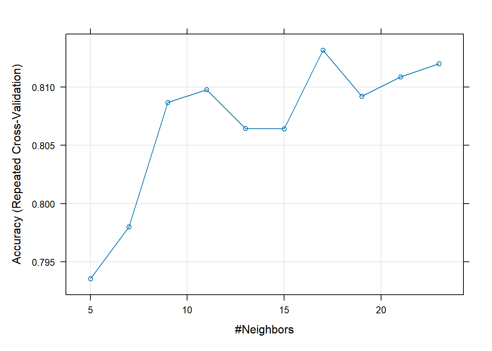

library(tidyverse)
library(caret)
library(randomForest)Homework5
Task 1: Conceptual Questions
- What is the purpose of using cross-validation when fitting a random forest model?
- The purpose for cross-validation in when fitting random forest models is to ensure that response variable is not overfitting and allows us to more clearly see how the model fits with new data. This is important in random forests to provide even more accuracy.
- Describe the bagged tree algorithm.
+ The bagged tree algorithm is a method in which we attempt to minimize variance in many fitted trees. The bagged tree algorithm takes in multiple fitted trees and aggregates them over a designated response variable in an attempt to find a prediction that holds for the accumulated trees. This increases accuracy and lowers variance.
- What is meant by a general linear model?
+ A general linear model has a continuous response variable and can be both categorical and continuous predictors. A general linear model also follows the formula \[Y = \beta_{1}X_{1}+\beta_{2}X_{2}+...+\beta_{n}X_{n}\]
- When fitting a multiple linear regression model, what does adding an interaction term do? That is, what does it allow the model to do differently as compared to when it is not included in the model?
+ Adding interaction terms when fitting multiple linear regression models allows you to see how different variables affect each other. When interaction terms are not included in the model the model will focus on the response variable alone.
- Why do we split our data into a training and test set?
+ Splitting data into a training and test set allows us to see how well our model preforms on different data. Splitting the data lets us train our model on our training set then test the model on the test set were we know the outcome which lets us review the performance of the model.
Task 2: Fitting Models
Quick EDA/Data Preparation
- Quickly understand your data. Check on missingness and summarize the data, especially with respect to the relationships of the variables to HeartDisease.
+ This chunk takes in the original data set and uses the na_if function to change assumed missing/NULL values into “NA”. Since a resting blood pressure and cholestoral of 0 is not possible while living we can assume that 0 is a null or missing value. This chunk then drops all rows with na observations and assigns it to a new data frame. Finally, this chunk prints a summary of the new data frame.
originalData<-read.csv("https://www4.stat.ncsu.edu/~online/datasets/heart.csv")
print(summary(originalData)) Age Sex ChestPainType RestingBP
Min. :28.00 Length:918 Length:918 Min. : 0.0
1st Qu.:47.00 Class :character Class :character 1st Qu.:120.0
Median :54.00 Mode :character Mode :character Median :130.0
Mean :53.51 Mean :132.4
3rd Qu.:60.00 3rd Qu.:140.0
Max. :77.00 Max. :200.0
Cholesterol FastingBS RestingECG MaxHR
Min. : 0.0 Min. :0.0000 Length:918 Min. : 60.0
1st Qu.:173.2 1st Qu.:0.0000 Class :character 1st Qu.:120.0
Median :223.0 Median :0.0000 Mode :character Median :138.0
Mean :198.8 Mean :0.2331 Mean :136.8
3rd Qu.:267.0 3rd Qu.:0.0000 3rd Qu.:156.0
Max. :603.0 Max. :1.0000 Max. :202.0
ExerciseAngina Oldpeak ST_Slope HeartDisease
Length:918 Min. :-2.6000 Length:918 Min. :0.0000
Class :character 1st Qu.: 0.0000 Class :character 1st Qu.:0.0000
Mode :character Median : 0.6000 Mode :character Median :1.0000
Mean : 0.8874 Mean :0.5534
3rd Qu.: 1.5000 3rd Qu.:1.0000
Max. : 6.2000 Max. :1.0000 # If RestingBP or Cholesterol = 0 then patient would be dead thus we can assume 0 is a
# missing/Null value Replaces ) with NA
originalData$RestingBP<-na_if(originalData$RestingBP,0)
originalData$Cholesterol<-na_if(originalData$Cholesterol,0)
# Find number of NA rows
sum(is.na(originalData))[1] 173# Create new dataframe with no na rows
heartDisease<-originalData|>
drop_na()
# Create Summary table with respect to heart disease
print(summary(heartDisease)) Age Sex ChestPainType RestingBP
Min. :28.00 Length:746 Length:746 Min. : 92
1st Qu.:46.00 Class :character Class :character 1st Qu.:120
Median :54.00 Mode :character Mode :character Median :130
Mean :52.88 Mean :133
3rd Qu.:59.00 3rd Qu.:140
Max. :77.00 Max. :200
Cholesterol FastingBS RestingECG MaxHR
Min. : 85.0 Min. :0.0000 Length:746 Min. : 69.0
1st Qu.:207.2 1st Qu.:0.0000 Class :character 1st Qu.:122.0
Median :237.0 Median :0.0000 Mode :character Median :140.0
Mean :244.6 Mean :0.1676 Mean :140.2
3rd Qu.:275.0 3rd Qu.:0.0000 3rd Qu.:160.0
Max. :603.0 Max. :1.0000 Max. :202.0
ExerciseAngina Oldpeak ST_Slope HeartDisease
Length:746 Min. :-0.1000 Length:746 Min. :0.0000
Class :character 1st Qu.: 0.0000 Class :character 1st Qu.:0.0000
Mode :character Median : 0.5000 Mode :character Median :0.0000
Mean : 0.9016 Mean :0.4772
3rd Qu.: 1.5000 3rd Qu.:1.0000
Max. : 6.2000 Max. :1.0000 - Create a new variable that is a factor version of the HeartDisease variable (if needed, this depends on how you read in your data). Remove the ST_Slope variable and the original HeartDisease variable (if applicable).
+ This chunk drops the ST_Slope variable.
# Change HeartDisease to factor, drop ST_Slope
heartDisease<-heartDisease|>
select(-ST_Slope)- We’ll be doing a kNN model below to predict whether or not someone has heart disease. To use kNN we generally want to have all numeric predictors (although we could try to create our own loss function as an alternative). In this case we have some categorical predictors still in our data set: Sex, ExerciseAngina ChestPainType, and RestingECG.
Create dummy columns corresponding to the values of these three variables for use in our kNN fit. The caret vignette has a function to help us out here. You should use dummyVars() and predict() to create new columns. Then add these columns to our data frame.
+ This chunk creates dummy variables for all categorical variables then uses predict to transform the data frame into all numeric data (even though there are categorical variables).
# Use dummyVars to transform all categorical variables to numerics.
# Adds each unique text entry as its own variable where 0=False and 1=True.
dummies<-dummyVars(~.,data = heartDisease, sep = ".")
heartDisease2<-predict(dummies,newdata = heartDisease)|>
as_tibble()Split your Data
split your data into a training and test set. (ideally you’d do this prior to the EDA so that info from the EDA doesn’t bias what you do modeling-wise, but that isn’t usually done.)
+ This chunk sets a seed for random numbers and then splits our data into a training and test set.
# Set the seed to enable reproducible
set.seed(8)
# Create a numeric vector that will be used to select rows in heartDisease_2 for split
trainingVector<- sample(1:nrow(heartDisease2),size = nrow(heartDisease2)*.8)
# Subset heartDisease_2 into training and test data sets
heartTrain<-heartDisease2[trainingVector,]|>
mutate(HeartDisease=as.factor(HeartDisease))
heartTest<-heartDisease2[-trainingVector,]|>
mutate(HeartDisease=as.factor(HeartDisease))kNN
Next, we’ll fit a kNN model. The article
You don’t have to use all the variables from your dataset when fitting the model. However, you should only use numeric variables.
They use repeated 10 fold cross-validation. Although computationally intensive, doing repeated CV helps to give a more stable prediction of CV error. This is similar to how a mean is less variable than a single value. Since there is some inherent randomness in doing a CV computation, we can get an overall more stable result by averaging a few runs of the CV algorithm!
Train the kNN model. Use repeated 10 fold cross-validation, with the number of repeats being 3. You should also preprocess the data by centering and scaling. When fitting the model, set the tuneGrid so that you are considering values of k of 1, 2, 3, . . . , 40. (Note: From the help for the train() function it says: tuneGrid A data frame with possible tuning values. The columns are named the same as the tuning parameters. The name of the tuning parameter here is k.) Lastly, check how well your chosen model does on the test set using the confusionMatrix() function.
+ This chunk creates the trcrl variable which we will use to cross validate all of our data when training. It also trains the knn model. Within the knn model we change the HeartDisease variable to a factor.We then plot the model to view the optimal number of neighbors. We then use the predict function with our model and the test data. The confusion matrix thenshows how well our model preformed.
trctrl<-trainControl(method = "repeatedcv", number = 10, repeats = 3)
knn_fit<-train(HeartDisease ~.,
data = heartTrain,
method = "knn",
trControl=trctrl,
preProcess=c("center","scale"),
tuneLength=10)
knn_fitk-Nearest Neighbors
596 samples
17 predictor
2 classes: '0', '1'
Pre-processing: centered (17), scaled (17)
Resampling: Cross-Validated (10 fold, repeated 3 times)
Summary of sample sizes: 536, 537, 536, 537, 537, 536, ...
Resampling results across tuning parameters:
k Accuracy Kappa
5 0.7935499 0.5843494
7 0.7980038 0.5931460
9 0.8086723 0.6146146
11 0.8097740 0.6165945
13 0.8064595 0.6096593
15 0.8064313 0.6098513
17 0.8131733 0.6233438
19 0.8091996 0.6154420
21 0.8108663 0.6186960
23 0.8120151 0.6211902
Accuracy was used to select the optimal model using the largest value.
The final value used for the model was k = 17.plot(knn_fit)
testPred<-predict(knn_fit,newdata = heartTest)
testPred [1] 0 1 0 1 0 0 0 0 1 0 0 1 0 0 1 0 0 0 0 0 0 0 0 1 0 0 0 0 1 0 0 0 1 0 1 1 0
[38] 0 1 0 1 1 1 0 0 0 0 0 0 0 1 0 0 0 1 0 1 0 0 0 0 0 1 1 1 1 1 1 1 0 1 0 1 1
[75] 0 1 0 1 1 1 1 1 1 1 0 1 0 1 0 0 0 0 1 1 0 1 1 0 0 0 1 1 0 1 0 0 1 0 0 1 1
[112] 0 0 1 1 0 1 0 0 0 1 1 1 0 0 1 1 0 0 1 0 0 1 0 0 1 0 1 1 1 0 0 0 1 0 0 0 0
[149] 1 0
Levels: 0 1confusionMatrix(testPred,heartTest$HeartDisease)Confusion Matrix and Statistics
Reference
Prediction 0 1
0 67 20
1 7 56
Accuracy : 0.82
95% CI : (0.749, 0.8779)
No Information Rate : 0.5067
P-Value [Acc > NIR] : 1.379e-15
Kappa : 0.6408
Mcnemar's Test P-Value : 0.02092
Sensitivity : 0.9054
Specificity : 0.7368
Pos Pred Value : 0.7701
Neg Pred Value : 0.8889
Prevalence : 0.4933
Detection Rate : 0.4467
Detection Prevalence : 0.5800
Balanced Accuracy : 0.8211
'Positive' Class : 0
Logistic Regression
Using your EDA, posit three different logistic regression models. Note: You don’t have to use the dummy columns you made here as the glm() function (and the caret implementation of it) can handle factor/ character variables as predictors.
Fit those models on the training set, using repeated CV as done above. You can preprocess the data or not, up to you.
+ The following 3 chunks fit 3 glm models on different variables to see how well of an indicator each is for heart disease. each chunk trains a model, summaries the model, plots it, predicts the test dataset then shows the results using a confusion matrix.
age_glmFit<-train(HeartDisease~Age,
data=heartTrain,
method="glm",
trControl = trctrl,
preProcess=c("center","scale"),
tuneLength=10,
family="binomial")
age_glmFitGeneralized Linear Model
596 samples
1 predictor
2 classes: '0', '1'
Pre-processing: centered (1), scaled (1)
Resampling: Cross-Validated (10 fold, repeated 3 times)
Summary of sample sizes: 536, 536, 537, 536, 536, 536, ...
Resampling results:
Accuracy Kappa
0.6538795 0.3044333summary(age_glmFit)
Call:
NULL
Coefficients:
Estimate Std. Error z value Pr(>|z|)
(Intercept) -0.13954 0.08693 -1.605 0.108
Age 0.71953 0.09541 7.542 4.63e-14 ***
---
Signif. codes: 0 '***' 0.001 '**' 0.01 '*' 0.05 '.' 0.1 ' ' 1
(Dispersion parameter for binomial family taken to be 1)
Null deviance: 824.06 on 595 degrees of freedom
Residual deviance: 758.23 on 594 degrees of freedom
AIC: 762.23
Number of Fisher Scoring iterations: 4heartTrain$HeartDisease<-as.numeric(as.character(heartTrain$HeartDisease))
ageHeart_sum<-heartTrain|>
group_by(Age)|>
summarise(probHeartDisease = mean(HeartDisease), n=n())
ggplot(ageHeart_sum,aes(x=Age,y=probHeartDisease))+
geom_point(stat = "identity",aes(size = n))+
stat_smooth(data = heartTrain,
aes(x=Age, y=HeartDisease),
method = "glm",
method.args = list(family=
"binomial"))+
theme(axis.text.x = element_text(angle=45,
vjust = 1,
hjust = 1))`geom_smooth()` using formula = 'y ~ x'
ageTestPred<-predict(age_glmFit,
newdata = heartTest,
type = "raw")
ageTestPred [1] 0 0 0 0 0 0 0 0 0 0 0 0 0 0 1 0 0 0 0 0 0 0 0 0 0 1 0 0 0 0 1 0 1 0 0 0 0
[38] 0 1 0 0 1 0 0 1 0 0 0 0 0 0 0 0 0 0 1 0 0 0 1 0 1 1 1 1 1 1 0 1 0 1 1 1 1
[75] 0 1 0 1 1 1 1 1 1 1 0 1 1 1 1 0 0 1 1 0 1 0 0 0 1 0 0 1 1 0 0 1 0 0 0 0 0
[112] 1 0 1 1 0 0 0 0 0 1 0 1 1 0 0 1 0 0 0 0 0 0 1 0 1 1 1 1 1 1 0 0 0 1 1 1 1
[149] 0 1
Levels: 0 1confusionMatrix(ageTestPred,as.factor(heartTest$HeartDisease))Confusion Matrix and Statistics
Reference
Prediction 0 1
0 55 37
1 19 39
Accuracy : 0.6267
95% CI : (0.544, 0.7042)
No Information Rate : 0.5067
P-Value [Acc > NIR] : 0.002038
Kappa : 0.2556
Mcnemar's Test P-Value : 0.023103
Sensitivity : 0.7432
Specificity : 0.5132
Pos Pred Value : 0.5978
Neg Pred Value : 0.6724
Prevalence : 0.4933
Detection Rate : 0.3667
Detection Prevalence : 0.6133
Balanced Accuracy : 0.6282
'Positive' Class : 0
chol_glmFit<-train(as.factor(HeartDisease) ~ Cholesterol,
data = heartTrain,
method = "glm",
trControl=trctrl,
preProcess=c("center","scale"),
tuneLength=10,
family="binomial")
chol_glmFitGeneralized Linear Model
596 samples
1 predictor
2 classes: '0', '1'
Pre-processing: centered (1), scaled (1)
Resampling: Cross-Validated (10 fold, repeated 3 times)
Summary of sample sizes: 536, 536, 537, 536, 536, 536, ...
Resampling results:
Accuracy Kappa
0.5295857 0.02091478summary(chol_glmFit)
Call:
NULL
Coefficients:
Estimate Std. Error z value Pr(>|z|)
(Intercept) -0.12129 0.08234 -1.473 0.1407
Cholesterol 0.16219 0.08364 1.939 0.0525 .
---
Signif. codes: 0 '***' 0.001 '**' 0.01 '*' 0.05 '.' 0.1 ' ' 1
(Dispersion parameter for binomial family taken to be 1)
Null deviance: 824.06 on 595 degrees of freedom
Residual deviance: 820.22 on 594 degrees of freedom
AIC: 824.22
Number of Fisher Scoring iterations: 4cholHeart_sum<-heartTrain|>
group_by(Cholesterol)|>
summarise(probHeartDisease = mean(HeartDisease), n=n())
ggplot(cholHeart_sum,aes(x=Cholesterol,y=probHeartDisease),size=n)+
geom_point(stat = "identity",aes(size = n))+
stat_smooth(data = heartTrain,
aes(x=Cholesterol, y=HeartDisease),
method = "glm",
method.args = list(family=
"binomial"))+
theme(axis.text.x = element_text(angle=45,
vjust = 1,
hjust = 1))`geom_smooth()` using formula = 'y ~ x'
cholTestPred<-predict(chol_glmFit,
newdata = heartTest,
type = "raw")
cholTestPred [1] 0 0 0 0 0 0 0 0 0 0 0 1 1 0 0 0 0 0 1 1 0 0 0 1 0 0 1 0 0 0 0 0 0 0 1 1 0
[38] 0 0 0 0 0 0 0 0 0 0 0 0 0 1 1 1 0 1 1 1 1 0 0 0 0 0 0 0 1 0 0 0 0 0 0 0 0
[75] 0 0 0 0 0 0 0 0 0 0 1 1 0 0 0 1 1 0 1 0 0 0 1 0 1 0 0 0 0 1 0 0 0 0 0 0 0
[112] 0 0 0 0 0 0 0 0 0 0 0 0 0 0 1 0 0 0 1 0 0 0 0 0 0 0 0 0 1 1 0 0 0 0 0 0 0
[149] 0 0
Levels: 0 1confusionMatrix(cholTestPred,heartTest$HeartDisease)Confusion Matrix and Statistics
Reference
Prediction 0 1
0 63 59
1 11 17
Accuracy : 0.5333
95% CI : (0.4502, 0.6151)
No Information Rate : 0.5067
P-Value [Acc > NIR] : 0.284
Kappa : 0.0744
Mcnemar's Test P-Value : 1.937e-08
Sensitivity : 0.8514
Specificity : 0.2237
Pos Pred Value : 0.5164
Neg Pred Value : 0.6071
Prevalence : 0.4933
Detection Rate : 0.4200
Detection Prevalence : 0.8133
Balanced Accuracy : 0.5375
'Positive' Class : 0
#Cross Validation preformed in trControl
maxHR_glmFit<-train(as.factor(HeartDisease) ~MaxHR,
data = heartTrain,
method = "glm",
trControl=trctrl,
preProcess=c("center","scale"),
tuneLength=10,
family="binomial")
maxHR_glmFitGeneralized Linear Model
596 samples
1 predictor
2 classes: '0', '1'
Pre-processing: centered (1), scaled (1)
Resampling: Cross-Validated (10 fold, repeated 3 times)
Summary of sample sizes: 537, 536, 537, 536, 536, 536, ...
Resampling results:
Accuracy Kappa
0.6795104 0.3546349summary(maxHR_glmFit)
Call:
NULL
Coefficients:
Estimate Std. Error z value Pr(>|z|)
(Intercept) -0.13911 0.08984 -1.548 0.122
MaxHR -0.93539 0.10175 -9.193 <2e-16 ***
---
Signif. codes: 0 '***' 0.001 '**' 0.01 '*' 0.05 '.' 0.1 ' ' 1
(Dispersion parameter for binomial family taken to be 1)
Null deviance: 824.06 on 595 degrees of freedom
Residual deviance: 719.84 on 594 degrees of freedom
AIC: 723.84
Number of Fisher Scoring iterations: 4maxHRHeart_sum<-heartTrain|>
group_by(MaxHR)|>
summarise(probHeartDisease = mean(HeartDisease), n=n())
ggplot(maxHRHeart_sum,aes(x=MaxHR,y=probHeartDisease),size=n)+
geom_point(stat = "identity",aes(size = n))+
stat_smooth(data = heartTrain,
aes(x=MaxHR, y=HeartDisease),
method = "glm",
method.args = list(family=
"binomial"))+
theme(axis.text.x = element_text(angle=45,
vjust = 1,
hjust = 1))`geom_smooth()` using formula = 'y ~ x'
maxHRTestPred<-predict(maxHR_glmFit,
newdata = heartTest,
type = "raw")
maxHRTestPred [1] 0 1 1 1 0 0 0 0 0 1 0 1 0 1 1 0 0 0 0 0 0 0 1 0 1 0 0 1 0 0 0 0 1 0 1 0 0
[38] 0 1 0 1 1 1 0 1 0 0 0 0 1 0 0 0 0 1 0 1 0 0 1 0 1 1 1 0 1 0 0 1 0 1 1 0 1
[75] 0 0 0 0 1 1 1 1 0 1 0 1 0 1 1 0 0 1 0 0 1 0 1 0 0 0 0 0 1 0 0 0 1 0 0 0 0
[112] 0 0 1 1 1 1 0 0 0 1 0 0 0 0 1 0 0 0 0 0 0 0 0 0 0 0 0 0 1 0 0 0 0 0 0 0 0
[149] 0 0
Levels: 0 1confusionMatrix(maxHRTestPred,heartTest$HeartDisease)Confusion Matrix and Statistics
Reference
Prediction 0 1
0 61 40
1 13 36
Accuracy : 0.6467
95% CI : (0.5645, 0.7229)
No Information Rate : 0.5067
P-Value [Acc > NIR] : 0.0003740
Kappa : 0.2966
Mcnemar's Test P-Value : 0.0003551
Sensitivity : 0.8243
Specificity : 0.4737
Pos Pred Value : 0.6040
Neg Pred Value : 0.7347
Prevalence : 0.4933
Detection Rate : 0.4067
Detection Prevalence : 0.6733
Balanced Accuracy : 0.6490
'Positive' Class : 0
Identify your best model and provide a basic summary of it.
+ The best model is the Max Heart Rate by Probability of Heart Disease model.
summary(maxHR_glmFit)
Call:
NULL
Coefficients:
Estimate Std. Error z value Pr(>|z|)
(Intercept) -0.13911 0.08984 -1.548 0.122
MaxHR -0.93539 0.10175 -9.193 <2e-16 ***
---
Signif. codes: 0 '***' 0.001 '**' 0.01 '*' 0.05 '.' 0.1 ' ' 1
(Dispersion parameter for binomial family taken to be 1)
Null deviance: 824.06 on 595 degrees of freedom
Residual deviance: 719.84 on 594 degrees of freedom
AIC: 723.84
Number of Fisher Scoring iterations: 4Lastly, check how well your chosen model does on the test set using the confusionMatrix() function.
+ This chunk uses a confusion martix to show how well the maxHR model preformed
confusionMatrix(maxHRTestPred,heartTest$HeartDisease)Confusion Matrix and Statistics
Reference
Prediction 0 1
0 61 40
1 13 36
Accuracy : 0.6467
95% CI : (0.5645, 0.7229)
No Information Rate : 0.5067
P-Value [Acc > NIR] : 0.0003740
Kappa : 0.2966
Mcnemar's Test P-Value : 0.0003551
Sensitivity : 0.8243
Specificity : 0.4737
Pos Pred Value : 0.6040
Neg Pred Value : 0.7347
Prevalence : 0.4933
Detection Rate : 0.4067
Detection Prevalence : 0.6733
Balanced Accuracy : 0.6490
'Positive' Class : 0
Tree Models
In this section we’ll fit a few different tree based models in a similar way as above!
Choose your own variables of interest (as with logistic regression, this models can accept factor/character variables as predictors). Use repeated 10 fold CV to select a best
- classification tree model (use method = rpart: tuning parameter is cp, use values 0, 0.001, 0.002, . . . , 0.1)
+ This chunk preforms a classification tree model on three variables and predicts the outcome.
#maxHR,RestingHR,cholesteral
maxHRFit<-train(as.factor(HeartDisease) ~MaxHR+Cholesterol+RestingBP,
data = heartTrain,
method = "rpart",
preProcess=c("center","scale"),
trControl=trctrl,
tuneGrid=data.frame(cp=c(seq(0,.1, by=0.001)
)
)
)
print(maxHRFit)CART
596 samples
3 predictor
2 classes: '0', '1'
Pre-processing: centered (3), scaled (3)
Resampling: Cross-Validated (10 fold, repeated 3 times)
Summary of sample sizes: 536, 537, 536, 536, 536, 537, ...
Resampling results across tuning parameters:
cp Accuracy Kappa
0.000 0.6039360 0.2046919
0.001 0.6061676 0.2093446
0.002 0.6240866 0.2457839
0.003 0.6240960 0.2452436
0.004 0.6348305 0.2673806
0.005 0.6409605 0.2797412
0.006 0.6465443 0.2917986
0.007 0.6505273 0.3000000
0.008 0.6561299 0.3111613
0.009 0.6583898 0.3154875
0.010 0.6617137 0.3221988
0.011 0.6611582 0.3209442
0.012 0.6617420 0.3214266
0.013 0.6617420 0.3214266
0.014 0.6622787 0.3218070
0.015 0.6622787 0.3215441
0.016 0.6633992 0.3238631
0.017 0.6633992 0.3238631
0.018 0.6639548 0.3243338
0.019 0.6639548 0.3243338
0.020 0.6678908 0.3312160
0.021 0.6678908 0.3312160
0.022 0.6683804 0.3319844
0.023 0.6683804 0.3319844
0.024 0.6706215 0.3359371
0.025 0.6706215 0.3359371
0.026 0.6706215 0.3359371
0.027 0.6706215 0.3359371
0.028 0.6706215 0.3359371
0.029 0.6706215 0.3359371
0.030 0.6695104 0.3344170
0.031 0.6695104 0.3344170
0.032 0.6644915 0.3250589
0.033 0.6644915 0.3250589
0.034 0.6644915 0.3250589
0.035 0.6644915 0.3250589
0.036 0.6565819 0.3103343
0.037 0.6565819 0.3103343
0.038 0.6565819 0.3103343
0.039 0.6565819 0.3103343
0.040 0.6543220 0.3064012
0.041 0.6543220 0.3064012
0.042 0.6526554 0.3040805
0.043 0.6526554 0.3040805
0.044 0.6526554 0.3040805
0.045 0.6526554 0.3040805
0.046 0.6526554 0.3040805
0.047 0.6526554 0.3040805
0.048 0.6526554 0.3040805
0.049 0.6526554 0.3040805
0.050 0.6526554 0.3040805
0.051 0.6526554 0.3040805
0.052 0.6526554 0.3040805
0.053 0.6526554 0.3040805
0.054 0.6526554 0.3040805
0.055 0.6526554 0.3040805
0.056 0.6526554 0.3040805
0.057 0.6526554 0.3040805
0.058 0.6526554 0.3040805
0.059 0.6526554 0.3040805
0.060 0.6526554 0.3040805
0.061 0.6526554 0.3040805
0.062 0.6526554 0.3040805
0.063 0.6526554 0.3040805
0.064 0.6526554 0.3040805
0.065 0.6526554 0.3040805
0.066 0.6526554 0.3040805
0.067 0.6526554 0.3040805
0.068 0.6526554 0.3040805
0.069 0.6526554 0.3040805
0.070 0.6526554 0.3040805
0.071 0.6526554 0.3040805
0.072 0.6526554 0.3040805
0.073 0.6526554 0.3040805
0.074 0.6526554 0.3040805
0.075 0.6526554 0.3040805
0.076 0.6526554 0.3040805
0.077 0.6526554 0.3040805
0.078 0.6526554 0.3040805
0.079 0.6526554 0.3040805
0.080 0.6526554 0.3040805
0.081 0.6526554 0.3040805
0.082 0.6526554 0.3040805
0.083 0.6526554 0.3040805
0.084 0.6526554 0.3040805
0.085 0.6526554 0.3040805
0.086 0.6526554 0.3040805
0.087 0.6526554 0.3040805
0.088 0.6526554 0.3040805
0.089 0.6526554 0.3040805
0.090 0.6526554 0.3040805
0.091 0.6526554 0.3040805
0.092 0.6526554 0.3040805
0.093 0.6526554 0.3040805
0.094 0.6526554 0.3040805
0.095 0.6526554 0.3040805
0.096 0.6526554 0.3040805
0.097 0.6526554 0.3040805
0.098 0.6526554 0.3040805
0.099 0.6526554 0.3040805
0.100 0.6526554 0.3040805
Accuracy was used to select the optimal model using the largest value.
The final value used for the model was cp = 0.029.plot(maxHRFit)
treePredict<-predict(maxHRFit,
newdata = heartTest,
type="raw"
)- a random forest (use method = rf: tuning parameter is mtry, use values of 1, 2, . . . , # of predictors (bagging is a special case here!)
+ This chunk preforms a random forest model on three variables and predicts the outcome.
# Creates a random forrest to find out how many predictors should be used
ForrestFit<-train(as.factor(HeartDisease) ~MaxHR+Cholesterol+RestingBP,
data = heartTrain,
method = "rf",
preProcess=c("center","scale"),
trControl=trctrl,
tuneGrid=data.frame(mtry=1)
)
forrestPredict<-predict(ForrestFit,
newdata = heartTest,
type="raw"
)- a boosted tree (use method = gbm: tuning parameters are n.trees, interaction.depth, shrinkage, and n.minobsinnode, use all combinations of n.trees of 25, 50, 100, and 200, interaction.depth of 1, 2, 3, shrinkage = 0.1, and nminobsinnode = 10; Hint: use expand.grid() to create your data frame for tuneGrid and verbose = FALSE limits the output produced
+ This chunk preforms a boosted tree model on three variables and predicts the outcome.
boostedTreeFit<-train(as.factor(HeartDisease) ~MaxHR+Cholesterol+RestingBP,
data = heartTrain,
method = "gbm",
preProcess=c("center","scale"),
trControl=trctrl,
tuneGrid=expand.grid(
n.trees=c(25,50,100,200),
interaction.depth=c(1,2,3),
shrinkage=.01,
n.minobsinnode=10),
verbose=FALSE
)
boostedPredict<-predict(boostedTreeFit,
newdata = heartTest,
type="raw"
)
boostedPredict [1] 0 1 1 1 0 0 0 0 0 1 0 1 0 1 1 0 0 0 0 0 0 0 1 0 1 0 0 0 0 0 0 0 1 0 1 0 0
[38] 0 1 0 1 1 1 0 1 0 0 0 0 1 0 0 0 0 1 0 1 0 0 1 0 1 1 1 0 1 0 0 1 0 1 1 0 1
[75] 0 0 0 0 1 1 1 1 0 1 0 1 0 1 1 0 0 1 0 0 0 0 1 0 0 0 0 0 1 0 0 0 1 0 0 0 0
[112] 0 0 0 1 1 1 0 0 0 1 0 0 0 0 1 0 0 0 0 0 0 0 0 0 0 0 0 0 1 0 0 0 0 0 0 0 0
[149] 0 0
Levels: 0 1Lastly, check how well each of your chosen models do on the test set using the confusionMatrix() function.
+ This chunk checks the preformace of all three tree models using the confuxion martix.
print(confusionMatrix(treePredict,heartTest$HeartDisease))Confusion Matrix and Statistics
Reference
Prediction 0 1
0 62 42
1 12 34
Accuracy : 0.64
95% CI : (0.5577, 0.7167)
No Information Rate : 0.5067
P-Value [Acc > NIR] : 0.0006761
Kappa : 0.2837
Mcnemar's Test P-Value : 7.933e-05
Sensitivity : 0.8378
Specificity : 0.4474
Pos Pred Value : 0.5962
Neg Pred Value : 0.7391
Prevalence : 0.4933
Detection Rate : 0.4133
Detection Prevalence : 0.6933
Balanced Accuracy : 0.6426
'Positive' Class : 0
print(confusionMatrix(forrestPredict,heartTest$HeartDisease))Confusion Matrix and Statistics
Reference
Prediction 0 1
0 55 34
1 19 42
Accuracy : 0.6467
95% CI : (0.5645, 0.7229)
No Information Rate : 0.5067
P-Value [Acc > NIR] : 0.000374
Kappa : 0.2951
Mcnemar's Test P-Value : 0.054474
Sensitivity : 0.7432
Specificity : 0.5526
Pos Pred Value : 0.6180
Neg Pred Value : 0.6885
Prevalence : 0.4933
Detection Rate : 0.3667
Detection Prevalence : 0.5933
Balanced Accuracy : 0.6479
'Positive' Class : 0
print(confusionMatrix(boostedPredict,heartTest$HeartDisease))Confusion Matrix and Statistics
Reference
Prediction 0 1
0 62 42
1 12 34
Accuracy : 0.64
95% CI : (0.5577, 0.7167)
No Information Rate : 0.5067
P-Value [Acc > NIR] : 0.0006761
Kappa : 0.2837
Mcnemar's Test P-Value : 7.933e-05
Sensitivity : 0.8378
Specificity : 0.4474
Pos Pred Value : 0.5962
Neg Pred Value : 0.7391
Prevalence : 0.4933
Detection Rate : 0.4133
Detection Prevalence : 0.6933
Balanced Accuracy : 0.6426
'Positive' Class : 0
Wrap up
Which model overall did the best job (in terms of accuracy) on the test set?
+ Overall the forest prediction did slightly better than the tree model and boosted tree model. The forest prediction had a 64.67% accuracy rate compared to the 64% accuracy of the other models. That being said the difference between the models is extremely small.